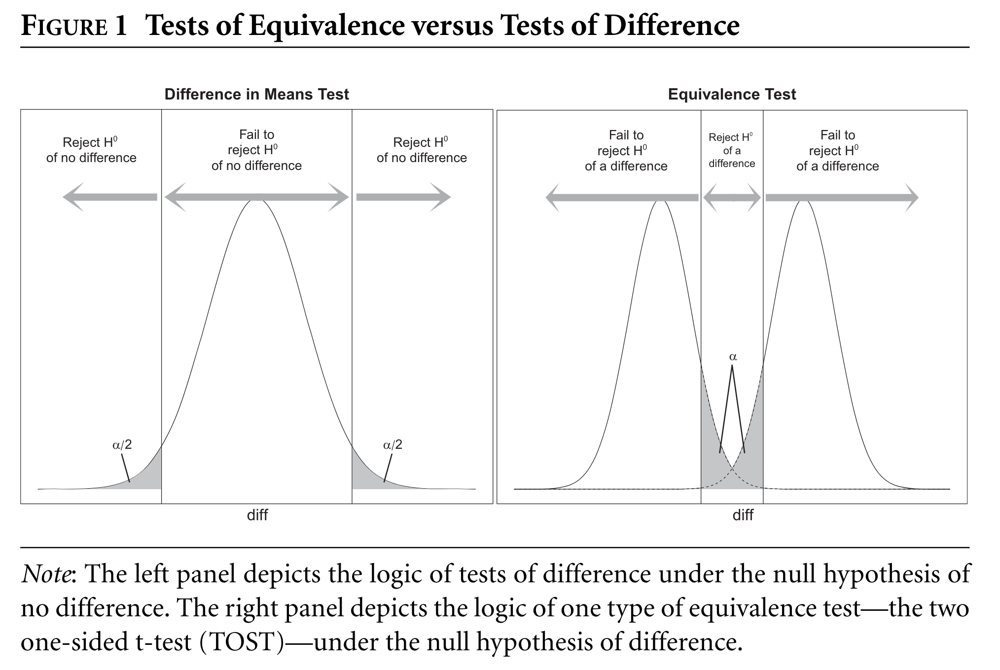
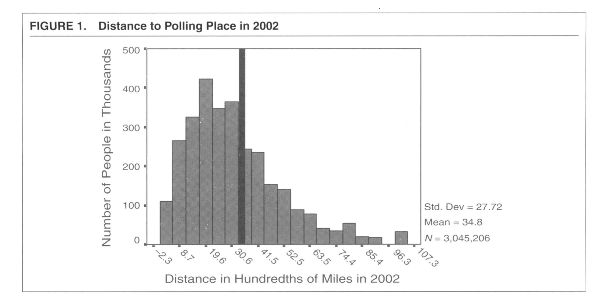

<!DOCTYPE html>
<html xmlns="http://www.w3.org/1999/xhtml" lang="en" xml:lang="en"><head>

<meta charset="utf-8">
<meta name="generator" content="quarto-1.5.57">

<meta name="viewport" content="width=device-width, initial-scale=1.0, user-scalable=yes">


<title>Equivalence – Causal Inference and Research Design</title>
<style>
code{white-space: pre-wrap;}
span.smallcaps{font-variant: small-caps;}
div.columns{display: flex; gap: min(4vw, 1.5em);}
div.column{flex: auto; overflow-x: auto;}
div.hanging-indent{margin-left: 1.5em; text-indent: -1.5em;}
ul.task-list{list-style: none;}
ul.task-list li input[type="checkbox"] {
  width: 0.8em;
  margin: 0 0.8em 0.2em -1em; /* quarto-specific, see https://github.com/quarto-dev/quarto-cli/issues/4556 */ 
  vertical-align: middle;
}
/* CSS for syntax highlighting */
pre > code.sourceCode { white-space: pre; position: relative; }
pre > code.sourceCode > span { line-height: 1.25; }
pre > code.sourceCode > span:empty { height: 1.2em; }
.sourceCode { overflow: visible; }
code.sourceCode > span { color: inherit; text-decoration: inherit; }
div.sourceCode { margin: 1em 0; }
pre.sourceCode { margin: 0; }
@media screen {
div.sourceCode { overflow: auto; }
}
@media print {
pre > code.sourceCode { white-space: pre-wrap; }
pre > code.sourceCode > span { display: inline-block; text-indent: -5em; padding-left: 5em; }
}
pre.numberSource code
  { counter-reset: source-line 0; }
pre.numberSource code > span
  { position: relative; left: -4em; counter-increment: source-line; }
pre.numberSource code > span > a:first-child::before
  { content: counter(source-line);
    position: relative; left: -1em; text-align: right; vertical-align: baseline;
    border: none; display: inline-block;
    -webkit-touch-callout: none; -webkit-user-select: none;
    -khtml-user-select: none; -moz-user-select: none;
    -ms-user-select: none; user-select: none;
    padding: 0 4px; width: 4em;
  }
pre.numberSource { margin-left: 3em;  padding-left: 4px; }
div.sourceCode
  {   }
@media screen {
pre > code.sourceCode > span > a:first-child::before { text-decoration: underline; }
}
/* CSS for citations */
div.csl-bib-body { }
div.csl-entry {
  clear: both;
  margin-bottom: 0em;
}
.hanging-indent div.csl-entry {
  margin-left:2em;
  text-indent:-2em;
}
div.csl-left-margin {
  min-width:2em;
  float:left;
}
div.csl-right-inline {
  margin-left:2em;
  padding-left:1em;
}
div.csl-indent {
  margin-left: 2em;
}</style>


<script src="site_libs/quarto-nav/quarto-nav.js"></script>
<script src="site_libs/quarto-nav/headroom.min.js"></script>
<script src="site_libs/clipboard/clipboard.min.js"></script>
<script src="site_libs/quarto-search/autocomplete.umd.js"></script>
<script src="site_libs/quarto-search/fuse.min.js"></script>
<script src="site_libs/quarto-search/quarto-search.js"></script>
<meta name="quarto:offset" content="./">
<link href="./missing-data.html" rel="next">
<link href="./matching.html" rel="prev">
<script src="site_libs/quarto-html/quarto.js"></script>
<script src="site_libs/quarto-html/popper.min.js"></script>
<script src="site_libs/quarto-html/tippy.umd.min.js"></script>
<script src="site_libs/quarto-html/anchor.min.js"></script>
<link href="site_libs/quarto-html/tippy.css" rel="stylesheet">
<link href="site_libs/quarto-html/quarto-syntax-highlighting.css" rel="stylesheet" id="quarto-text-highlighting-styles">
<script src="site_libs/bootstrap/bootstrap.min.js"></script>
<link href="site_libs/bootstrap/bootstrap-icons.css" rel="stylesheet">
<link href="site_libs/bootstrap/bootstrap.min.css" rel="stylesheet" id="quarto-bootstrap" data-mode="light">
<script src="site_libs/quarto-contrib/glightbox/glightbox.min.js"></script>
<link href="site_libs/quarto-contrib/glightbox/glightbox.min.css" rel="stylesheet">
<link href="site_libs/quarto-contrib/glightbox/lightbox.css" rel="stylesheet">
<script id="quarto-search-options" type="application/json">{
  "location": "sidebar",
  "copy-button": false,
  "collapse-after": 3,
  "panel-placement": "start",
  "type": "textbox",
  "limit": 50,
  "keyboard-shortcut": [
    "f",
    "/",
    "s"
  ],
  "show-item-context": false,
  "language": {
    "search-no-results-text": "No results",
    "search-matching-documents-text": "matching documents",
    "search-copy-link-title": "Copy link to search",
    "search-hide-matches-text": "Hide additional matches",
    "search-more-match-text": "more match in this document",
    "search-more-matches-text": "more matches in this document",
    "search-clear-button-title": "Clear",
    "search-text-placeholder": "",
    "search-detached-cancel-button-title": "Cancel",
    "search-submit-button-title": "Submit",
    "search-label": "Search"
  }
}</script>

  <script src="https://cdnjs.cloudflare.com/polyfill/v3/polyfill.min.js?features=es6"></script>
  <script src="https://cdn.jsdelivr.net/npm/mathjax@3/es5/tex-chtml-full.js" type="text/javascript"></script>

<script type="text/javascript">
const typesetMath = (el) => {
  if (window.MathJax) {
    // MathJax Typeset
    window.MathJax.typeset([el]);
  } else if (window.katex) {
    // KaTeX Render
    var mathElements = el.getElementsByClassName("math");
    var macros = [];
    for (var i = 0; i < mathElements.length; i++) {
      var texText = mathElements[i].firstChild;
      if (mathElements[i].tagName == "SPAN") {
        window.katex.render(texText.data, mathElements[i], {
          displayMode: mathElements[i].classList.contains('display'),
          throwOnError: false,
          macros: macros,
          fleqn: false
        });
      }
    }
  }
}
window.Quarto = {
  typesetMath
};
</script>

<link rel="stylesheet" href="www/styles.css">
</head>

<body class="nav-sidebar floating">

<div id="quarto-search-results"></div>
  <header id="quarto-header" class="headroom fixed-top">
  <nav class="quarto-secondary-nav">
    <div class="container-fluid d-flex">
      <button type="button" class="quarto-btn-toggle btn" data-bs-toggle="collapse" role="button" data-bs-target=".quarto-sidebar-collapse-item" aria-controls="quarto-sidebar" aria-expanded="false" aria-label="Toggle sidebar navigation" onclick="if (window.quartoToggleHeadroom) { window.quartoToggleHeadroom(); }">
        <i class="bi bi-layout-text-sidebar-reverse"></i>
      </button>
        <nav class="quarto-page-breadcrumbs" aria-label="breadcrumb"><ol class="breadcrumb"><li class="breadcrumb-item"><a href="./matching-equivalence.html">Session 2 - Matching and Equivalence</a></li><li class="breadcrumb-item"><a href="./equivalence.html">Equivalence</a></li></ol></nav>
        <a class="flex-grow-1" role="navigation" data-bs-toggle="collapse" data-bs-target=".quarto-sidebar-collapse-item" aria-controls="quarto-sidebar" aria-expanded="false" aria-label="Toggle sidebar navigation" onclick="if (window.quartoToggleHeadroom) { window.quartoToggleHeadroom(); }">      
        </a>
      <button type="button" class="btn quarto-search-button" aria-label="Search" onclick="window.quartoOpenSearch();">
        <i class="bi bi-search"></i>
      </button>
    </div>
  </nav>
</header>
<!-- content -->
<div id="quarto-content" class="quarto-container page-columns page-rows-contents page-layout-article">
<!-- sidebar -->
  <nav id="quarto-sidebar" class="sidebar collapse collapse-horizontal quarto-sidebar-collapse-item sidebar-navigation floating overflow-auto">
    <div class="pt-lg-2 mt-2 text-left sidebar-header">
    <div class="sidebar-title mb-0 py-0">
      <a href="./">Causal Inference and Research Design</a> 
    </div>
      </div>
        <div class="mt-2 flex-shrink-0 align-items-center">
        <div class="sidebar-search">
        <div id="quarto-search" class="" title="Search"></div>
        </div>
        </div>
    <div class="sidebar-menu-container"> 
    <ul class="list-unstyled mt-1">
        <li class="sidebar-item">
  <div class="sidebar-item-container"> 
  <a href="./index.html" class="sidebar-item-text sidebar-link">
 <span class="menu-text">Why are we here?</span></a>
  </div>
</li>
        <li class="sidebar-item">
  <div class="sidebar-item-container"> 
  <a href="./latex-quarto.html" class="sidebar-item-text sidebar-link">
 <span class="menu-text">Session 1 - <span class="math inline">\(\LaTeX\)</span> and Quarto</span></a>
  </div>
</li>
        <li class="sidebar-item sidebar-item-section">
      <div class="sidebar-item-container"> 
            <a href="./matching-equivalence.html" class="sidebar-item-text sidebar-link">
 <span class="menu-text">Session 2 - Matching and Equivalence</span></a>
          <a class="sidebar-item-toggle text-start" data-bs-toggle="collapse" data-bs-target="#quarto-sidebar-section-1" role="navigation" aria-expanded="true" aria-label="Toggle section">
            <i class="bi bi-chevron-right ms-2"></i>
          </a> 
      </div>
      <ul id="quarto-sidebar-section-1" class="collapse list-unstyled sidebar-section depth1 show">  
          <li class="sidebar-item">
  <div class="sidebar-item-container"> 
  <a href="./matching.html" class="sidebar-item-text sidebar-link">
 <span class="menu-text">Matching</span></a>
  </div>
</li>
          <li class="sidebar-item">
  <div class="sidebar-item-container"> 
  <a href="./equivalence.html" class="sidebar-item-text sidebar-link active">
 <span class="menu-text">Equivalence</span></a>
  </div>
</li>
      </ul>
  </li>
        <li class="sidebar-item">
  <div class="sidebar-item-container"> 
  <a href="./missing-data.html" class="sidebar-item-text sidebar-link">
 <span class="menu-text">Session 3 - Missing Data and Multiple Imputation</span></a>
  </div>
</li>
        <li class="sidebar-item">
  <div class="sidebar-item-container"> 
  <a href="./sensitivity-mediation.html" class="sidebar-item-text sidebar-link">
 <span class="menu-text">Session 4 - Sensitivity and Mediation</span></a>
  </div>
</li>
        <li class="sidebar-item">
  <div class="sidebar-item-container"> 
  <a href="./moderation.html" class="sidebar-item-text sidebar-link">
 <span class="menu-text">Session 5 - Moderation</span></a>
  </div>
</li>
        <li class="sidebar-item">
  <div class="sidebar-item-container"> 
  <a href="./references.html" class="sidebar-item-text sidebar-link">
 <span class="menu-text">References</span></a>
  </div>
</li>
    </ul>
    </div>
</nav>
<div id="quarto-sidebar-glass" class="quarto-sidebar-collapse-item" data-bs-toggle="collapse" data-bs-target=".quarto-sidebar-collapse-item"></div>
<!-- margin-sidebar -->
    <div id="quarto-margin-sidebar" class="sidebar margin-sidebar">
        <nav id="TOC" role="doc-toc" class="toc-active">
    <h2 id="toc-title">Table of contents</h2>
   
  <ul>
  <li><a href="#equivalence-testing-for-causal-inference-in-social-science-research-design" id="toc-equivalence-testing-for-causal-inference-in-social-science-research-design" class="nav-link active" data-scroll-target="#equivalence-testing-for-causal-inference-in-social-science-research-design">Equivalence Testing for Causal Inference in Social Science Research Design</a></li>
  <li><a href="#mechanics" id="toc-mechanics" class="nav-link" data-scroll-target="#mechanics">Mechanics</a></li>
  <li><a href="#equivalence-testing-in-requivalence-1" id="toc-equivalence-testing-in-requivalence-1" class="nav-link" data-scroll-target="#equivalence-testing-in-requivalence-1">Equivalence Testing in R</a>
  <ul class="collapse">
  <li><a href="#how-does-the-equiv.t.test-function-work" id="toc-how-does-the-equiv.t.test-function-work" class="nav-link" data-scroll-target="#how-does-the-equiv.t.test-function-work">How does the <code>equiv.t.test</code> function work?</a></li>
  <li><a href="#illustration-used-in-hartman-and-hidalgo-2018" id="toc-illustration-used-in-hartman-and-hidalgo-2018" class="nav-link" data-scroll-target="#illustration-used-in-hartman-and-hidalgo-2018">Illustration used in Hartman and Hidalgo, 2018</a></li>
  </ul></li>
  <li><a href="#how-to-run-equivalence-tests-on-your-own-data" id="toc-how-to-run-equivalence-tests-on-your-own-data" class="nav-link" data-scroll-target="#how-to-run-equivalence-tests-on-your-own-data">How to run equivalence tests on your own data?</a></li>
  <li><a href="#glossary-of-key-terms-in-hh-2018" id="toc-glossary-of-key-terms-in-hh-2018" class="nav-link" data-scroll-target="#glossary-of-key-terms-in-hh-2018">Glossary of Key Terms in H&amp;H 2018</a></li>
  </ul>
</nav>
    </div>
<!-- main -->
<main class="content" id="quarto-document-content">

<header id="title-block-header" class="quarto-title-block default"><nav class="quarto-page-breadcrumbs quarto-title-breadcrumbs d-none d-lg-block" aria-label="breadcrumb"><ol class="breadcrumb"><li class="breadcrumb-item"><a href="./matching-equivalence.html">Session 2 - Matching and Equivalence</a></li><li class="breadcrumb-item"><a href="./equivalence.html">Equivalence</a></li></ol></nav>
<div class="quarto-title">
<h1 class="title">Equivalence</h1>
</div>


<div class="quarto-title-meta">

    
  
    
  </div>
  


</header>


<p>This Lab is based on <span class="citation" data-cites="hartmanEquivalenceApproachBalance2018">Hartman and Hidalgo (<a href="references.html#ref-hartmanEquivalenceApproachBalance2018" role="doc-biblioref">2018</a>)</span></p>
<p>Also see <span class="citation" data-cites="hartmanEquivalenceTestingRegression2021">Hartman (<a href="references.html#ref-hartmanEquivalenceTestingRegression2021" role="doc-biblioref">2021</a>)</span> for advanced discussion.</p>
<div class="callout callout-style-default callout-note callout-titled">
<div class="callout-header d-flex align-content-center">
<div class="callout-icon-container">
<i class="callout-icon"></i>
</div>
<div class="callout-title-container flex-fill">
Note
</div>
</div>
<div class="callout-body-container callout-body">
<ol type="1">
<li><p>Download the updated Lab folder from <a href="https://drive.google.com/file/d/16nLoFLBu2uE3fU6bb_YT6hEV5q5o7TWq/view?usp=sharing">here</a>.</p></li>
<li><p>Run the <code>.RProj</code> file.</p></li>
<li><p>Open <code>equivalence-10022024.qmd</code>.</p></li>
</ol>
</div>
</div>
<section id="equivalence-testing-for-causal-inference-in-social-science-research-design" class="level3">
<h3 class="anchored" data-anchor-id="equivalence-testing-for-causal-inference-in-social-science-research-design">Equivalence Testing for Causal Inference in Social Science Research Design</h3>
<p>Causal Identification is critically dependent on the underlying assumptions about the data generating process. These assumptions are inherently untestable but have observable implications that are empirically validated. Conceptually, <em>uncounfoundedness</em> which is achieved by randomization in experiments and is conditionally achieved in analysis of observational and quasi-experimental data, is tested by <em>balance tests</em>. In simple terms, balance tests check that if indeed the treatment assignemnt was independent of potential outcomes on controlling for vector of confounders, the covariates <strong>do not</strong> significantly differ between the control and treatment groups.<br>
This implies, to test unconfoundedness assumption or CIA, the null-hypothesis we should begin with is that of data being inconsistent with a research design valid for causal inference.</p>
<blockquote class="blockquote">
<p>“We argue that researchers should begin with the initial hypothesis that the data are inconsistent with a valid research design, and provide sufficient statistical evidence in favor of a valid design.” - H&amp;H 2018</p>
</blockquote>
<p>This can be framed in hypothesis testing terms as:</p>
<p><span class="math inline">\(H_0:\)</span> Data Inconsistent with <em>observable</em> implications of uncounfounded Research Design.</p>
<p><span class="math inline">\(\implies\)</span> Covariates’ distribution not same across Treatment Groups.</p>
<p><span class="math inline">\(H_A:\)</span> Data consistent with <em>observable</em> implications of uncounfounded Research Design.</p>
<p><span class="math inline">\(\implies\)</span> Covariates’ distribution same across Treatment Groups.</p>
<p>However, as has traditionally been the practice, also seen in most of the approaches and papers in your coursework, especially those on natural experiments, the balance tests infer the non-significance of difference between distribution of covariates, as <em>sameness</em> of distribution between treatment groups. As <span class="citation" data-cites="hartmanEquivalenceApproachBalance2018">Hartman and Hidalgo (<a href="references.html#ref-hartmanEquivalenceApproachBalance2018" role="doc-biblioref">2018</a>)</span> put it, this practice is akin to “incorrectly equating non-significant difference with significant homogeniety” <span class="citation" data-cites="wellekTestingStatisticalHypotheses2010">(quoted from <a href="references.html#ref-wellekTestingStatisticalHypotheses2010" role="doc-biblioref">Wellek 2010</a>)</span>.</p>
<p>Traditional balance tests, which rely on null hypotheses of no difference, can be misleading due to issues of statistical power. Hartman and Hidalgo (2018) advocate for equivalence tests, where the null hypothesis assumes a meaningful difference exists, and researchers aim to find evidence for equivalence within a pre-defined range. The guide emphasizes the importance of selecting appropriate equivalence ranges and interpreting the results in the context of potential bias and causal identification.</p>
<p><strong>Key Concepts:</strong></p>
<ul>
<li><p><strong>Tests of Design:</strong> Procedures used to assess the plausibility of causal identification assumptions. This includes balance tests (comparing pretreatment covariates) and placebo tests (examining treatment effects on unaffected outcomes).</p></li>
<li><p><strong>Balance Test:</strong> Assessing whether the distributions of pretreatment covariates are similar between treatment and control groups. Good balance strengthens the credibility of an unconfounded design.</p></li>
<li><p><strong>Equivalence Testing:</strong> A statistical testing framework where the null hypothesis posits a meaningful difference, and the goal is to find evidence for equivalence within a defined range.</p></li>
<li><p><strong>Equivalence Range:</strong> The range of values within which the difference between two groups is considered substantively inconsequential. Selecting a justifiable equivalence range is crucial for equivalence tests. It’s crucial because it operationalizes what “similar enough” means in the context of the specific study, directly incorporating researcher judgment and subject-matter knowledge.</p></li>
<li><p><strong>Two One-Sided Test (TOST):</strong> A common equivalence test involving conducting two one-sided tests to determine if the difference between groups falls within the equivalence range.</p></li>
<li><p><strong>Equivalence Confidence Interval (ECI):</strong> Similar to a confidence interval, the ECI represents the smallest equivalence range supported by the data at a given significance level. It helps researchers assess the uncertainty surrounding the true difference and defend the chosen range.</p></li>
</ul>
</section>
<section id="mechanics" class="level2">
<h2 class="anchored" data-anchor-id="mechanics">Mechanics</h2>
<p>Equivalence T test assumes the following Two One Sided Test (TOST) form: <span class="math display">\[
\begin{align*}
H_0: \frac{\mu_T - \mu_C}{\sigma} &amp;\geq \epsilon_U \quad \text{or} \quad \frac{\mu_T - \mu_C}{\sigma} \leq \epsilon_L \\
\text{versus} \\
H_1: \epsilon_L &amp;&lt; \frac{\mu_T - \mu_C}{\sigma} &lt; \epsilon_U
\end{align*} \\
\]</span> where [<span class="math inline">\(\epsilon_L\)</span> , <span class="math inline">\(\epsilon_U\)</span> ] is the equivalence range, <span class="math inline">\(\mu_T\)</span> and <span class="math inline">\(\mu_C\)</span> are the means of the treated and control groups, respectively, for a given covariate, and <span class="math inline">\(\sigma\)</span>is the common standard deviation. The terms <span class="math inline">\(\epsilon_U\)</span> and <span class="math inline">\(\epsilon_L\)</span> are the upper and lower bounds for which two groups are considered equivalent.</p>
<p>Choosing appropriate values for <span class="math inline">\(\epsilon_U\)</span> and <span class="math inline">\(\epsilon_U\)</span> is the most important aspect of equivalence testing, (Refer to <strong>Selecting an Equivalence Range</strong> section in H&amp;H 2018 for more details).</p>
<p>As shown here, test is conducted using two one-sided t-tests, and the null of difference is rejected in favor of equivalence if the p-value for both one-sided tests is less than <span class="math inline">\(\alpha\)</span></p>
<div class="cell">
<div class="cell-output-display">
<div id="fig-new-project" class="quarto-float quarto-figure quarto-figure-center anchored">
<figure class="quarto-float quarto-float-fig figure">
<div aria-describedby="fig-new-project-caption-0ceaefa1-69ba-4598-a22c-09a6ac19f8ca">
<a href="eqt.png" class="lightbox" data-gallery="quarto-lightbox-gallery-1" title="Figure&nbsp;1: Source- Hartman and Hidalgo, 2018, pp.5"></a>
</div>
<figcaption class="quarto-float-caption-bottom quarto-float-caption quarto-float-fig" id="fig-new-project-caption-0ceaefa1-69ba-4598-a22c-09a6ac19f8ca">
Figure&nbsp;1: Source- Hartman and Hidalgo, 2018, pp.5
</figcaption>
</figure>
</div>
</div>
</div>
</section>
<section id="equivalence-testing-in-requivalence-1" class="level2">
<h2 class="anchored" data-anchor-id="equivalence-testing-in-requivalence-1">Equivalence Testing in R<a href="#fn1" class="footnote-ref" id="fnref1" role="doc-noteref"><sup>1</sup></a></h2>
<p>The equivalence testing package developed by Hartman and Hidalgo (2018) is not yet available on CRAN. We install it from github by using the following code:</p>
<div class="cell">
<div class="sourceCode cell-code" id="cb1"><pre class="sourceCode r code-with-copy"><code class="sourceCode r"><span id="cb1-1"><a href="#cb1-1" aria-hidden="true" tabindex="-1"></a><span class="co">#install.packages("devtools")</span></span>
<span id="cb1-2"><a href="#cb1-2" aria-hidden="true" tabindex="-1"></a><span class="fu">library</span>(devtools)</span></code><button title="Copy to Clipboard" class="code-copy-button"><i class="bi"></i></button></pre></div>
<div class="cell-output cell-output-stderr">
<pre><code>Loading required package: usethis</code></pre>
</div>
<div class="sourceCode cell-code" id="cb3"><pre class="sourceCode r code-with-copy"><code class="sourceCode r"><span id="cb3-1"><a href="#cb3-1" aria-hidden="true" tabindex="-1"></a><span class="co">#install_github("ekhartman/equivtest", force = TRUE)</span></span>
<span id="cb3-2"><a href="#cb3-2" aria-hidden="true" tabindex="-1"></a><span class="fu">library</span>(equivtest)</span></code><button title="Copy to Clipboard" class="code-copy-button"><i class="bi"></i></button></pre></div>
</div>
<p><strong>Using the sample example from H&amp;H 2018</strong></p>
<p><em>The equivalence range for the t-test for equivalence is typically defined in standardized differences rather than the raw difference in means between the two groups, but researchers can easily map their substantive ranges to standardized differences by scaling by the standard deviation in the covariate. The standardized difference is a useful metric when testing for equivalence because, given some difference between the means of the two distributions, the two groups are increasingly indistinguishable as the variance of the distributions grows towards infinity, and increasingly disjoint as the variance of the distributions shrinks towards zero (Wellek 2010). We also recommend the t-test for equivalence because it is the uniformly most powerful invariant (UMPI) test for two normally distributed variables (Wellek 2010, pg. 120).</em></p>
<p>For the equivalence t-test, we are interested in <span class="math inline">\(H_1: \epsilon_L &lt; \frac{\mu_T-\mu_C}{\sigma} &lt; \epsilon_U\)</span>. For more information concerning acceptable <span class="math inline">\(\epsilon\)</span> inputs, refer to the <em>equiv.t.test</em> documentation or Hartman &amp; Hidalgo (2018).</p>
<p>We now implement Example 6.1 from Wellek (2010). In summary, we wish to compare two treatments using a nonsymmetric equivalence range.</p>
<div class="cell">
<div class="sourceCode cell-code" id="cb4"><pre class="sourceCode r code-with-copy"><code class="sourceCode r"><span id="cb4-1"><a href="#cb4-1" aria-hidden="true" tabindex="-1"></a><span class="co"># Wellek p 124</span></span>
<span id="cb4-2"><a href="#cb4-2" aria-hidden="true" tabindex="-1"></a></span>
<span id="cb4-3"><a href="#cb4-3" aria-hidden="true" tabindex="-1"></a>x<span class="ot">=</span><span class="fu">c</span>(<span class="fl">10.3</span>,<span class="fl">11.3</span>,<span class="dv">2</span>,<span class="sc">-</span><span class="fl">6.1</span>,<span class="fl">6.2</span>,<span class="fl">6.8</span>,<span class="fl">3.7</span>,<span class="sc">-</span><span class="fl">3.3</span>,<span class="sc">-</span><span class="fl">3.6</span>,<span class="sc">-</span><span class="fl">3.5</span>,<span class="fl">13.7</span>,<span class="fl">12.6</span>)</span>
<span id="cb4-4"><a href="#cb4-4" aria-hidden="true" tabindex="-1"></a>y<span class="ot">=</span><span class="fu">c</span>(<span class="fl">3.3</span>,<span class="fl">17.7</span>,<span class="fl">6.7</span>,<span class="fl">11.1</span>,<span class="sc">-</span><span class="fl">5.8</span>,<span class="fl">6.9</span>,<span class="fl">5.8</span>,<span class="dv">3</span>,<span class="dv">6</span>,<span class="fl">3.5</span>,<span class="fl">18.7</span>,<span class="fl">9.6</span>)</span>
<span id="cb4-5"><a href="#cb4-5" aria-hidden="true" tabindex="-1"></a></span>
<span id="cb4-6"><a href="#cb4-6" aria-hidden="true" tabindex="-1"></a><span class="fu">t.test</span>(x,y)</span></code><button title="Copy to Clipboard" class="code-copy-button"><i class="bi"></i></button></pre></div>
<div class="cell-output cell-output-stdout">
<pre><code>
    Welch Two Sample t-test

data:  x and y
t = -1.0862, df = 21.915, p-value = 0.2892
alternative hypothesis: true difference in means is not equal to 0
95 percent confidence interval:
 -8.826339  2.759672
sample estimates:
mean of x mean of y 
 4.175000  7.208333 </code></pre>
</div>
<div class="sourceCode cell-code" id="cb6"><pre class="sourceCode r code-with-copy"><code class="sourceCode r"><span id="cb6-1"><a href="#cb6-1" aria-hidden="true" tabindex="-1"></a>res<span class="ot">=</span><span class="fu">equiv.t.test</span>(x,y,<span class="at">eps_std=</span><span class="fu">c</span>(.<span class="dv">5</span>,<span class="dv">1</span>), <span class="at">alpha =</span> .<span class="dv">05</span>)</span>
<span id="cb6-2"><a href="#cb6-2" aria-hidden="true" tabindex="-1"></a><span class="fu">summary</span>(res)</span></code><button title="Copy to Clipboard" class="code-copy-button"><i class="bi"></i></button></pre></div>
<div class="cell-output cell-output-stdout">
<pre><code>Equivalence t-test 
Input: eps_std,  SE = 2.793
T-statistic critical interval: 0.28 to 0.931 
Substantive equivalence CI: NA to NA 
Standardized equivalence CI: NA to NA 
Reject the null hypothesis? FALSE, p-value of NA</code></pre>
</div>
<div class="sourceCode cell-code" id="cb8"><pre class="sourceCode r code-with-copy"><code class="sourceCode r"><span id="cb8-1"><a href="#cb8-1" aria-hidden="true" tabindex="-1"></a><span class="co"># Compare with t.test</span></span></code><button title="Copy to Clipboard" class="code-copy-button"><i class="bi"></i></button></pre></div>
</div>
<p><em>The data do not allow to reject the null hypothesis of nonequivalence of (treatment A) to (treatment B).</em></p>
<section id="how-does-the-equiv.t.test-function-work" class="level3">
<h3 class="anchored" data-anchor-id="how-does-the-equiv.t.test-function-work">How does the <code>equiv.t.test</code> function work?</h3>
<div class="tabset-margin-container"></div><div class="panel-tabset">
<ul class="nav nav-tabs" role="tablist"><li class="nav-item" role="presentation"><a class="nav-link active" id="tabset-1-1-tab" data-bs-toggle="tab" data-bs-target="#tabset-1-1" role="tab" aria-controls="tabset-1-1" aria-selected="true" aria-current="page">Code from Hartman Github Page with Notes</a></li><li class="nav-item" role="presentation"><a class="nav-link" id="tabset-1-2-tab" data-bs-toggle="tab" data-bs-target="#tabset-1-2" role="tab" aria-controls="tabset-1-2" aria-selected="false">Key Terms in the Function</a></li></ul>
<div class="tab-content">
<div id="tabset-1-1" class="tab-pane active" role="tabpanel" aria-labelledby="tabset-1-1-tab">
<div class="cell">
<details class="code-fold">
<summary>Code</summary>
<div class="sourceCode cell-code" id="cb9"><pre class="sourceCode markdown code-with-copy"><code class="sourceCode markdown"><span id="cb9-1"><a href="#cb9-1" aria-hidden="true" tabindex="-1"></a><span class="in">```{r}</span></span>
<span id="cb9-2"><a href="#cb9-2" aria-hidden="true" tabindex="-1"></a><span class="in">#| code-fold: true</span></span>
<span id="cb9-3"><a href="#cb9-3" aria-hidden="true" tabindex="-1"></a><span class="in">equiv.t.test &lt;- function(x, y, alpha = .05, epsilon = .2, std.err = "nominal", cluster.x = NULL, cluster.y = NULL) {</span></span>
<span id="cb9-4"><a href="#cb9-4" aria-hidden="true" tabindex="-1"></a></span>
<span id="cb9-5"><a href="#cb9-5" aria-hidden="true" tabindex="-1"></a><span class="in">  # Remove NAs from the data</span></span>
<span id="cb9-6"><a href="#cb9-6" aria-hidden="true" tabindex="-1"></a><span class="in">  x = x[!is.na(x)]</span></span>
<span id="cb9-7"><a href="#cb9-7" aria-hidden="true" tabindex="-1"></a><span class="in">  y = y[!is.na(y)]</span></span>
<span id="cb9-8"><a href="#cb9-8" aria-hidden="true" tabindex="-1"></a></span>
<span id="cb9-9"><a href="#cb9-9" aria-hidden="true" tabindex="-1"></a><span class="in">  # Calculate the difference in means</span></span>
<span id="cb9-10"><a href="#cb9-10" aria-hidden="true" tabindex="-1"></a><span class="in">  dbar &lt;- mean(x) - mean(y)</span></span>
<span id="cb9-11"><a href="#cb9-11" aria-hidden="true" tabindex="-1"></a></span>
<span id="cb9-12"><a href="#cb9-12" aria-hidden="true" tabindex="-1"></a><span class="in">  # Get the sample sizes as doubles</span></span>
<span id="cb9-13"><a href="#cb9-13" aria-hidden="true" tabindex="-1"></a><span class="in">  m &lt;- as.double(length(x))</span></span>
<span id="cb9-14"><a href="#cb9-14" aria-hidden="true" tabindex="-1"></a><span class="in">  n &lt;- as.double(length(y))</span></span>
<span id="cb9-15"><a href="#cb9-15" aria-hidden="true" tabindex="-1"></a><span class="in">  N &lt;- m+n</span></span>
<span id="cb9-16"><a href="#cb9-16" aria-hidden="true" tabindex="-1"></a></span>
<span id="cb9-17"><a href="#cb9-17" aria-hidden="true" tabindex="-1"></a><span class="in">  # Calculate the variances of each group</span></span>
<span id="cb9-18"><a href="#cb9-18" aria-hidden="true" tabindex="-1"></a><span class="in">  x.var &lt;- var(x)</span></span>
<span id="cb9-19"><a href="#cb9-19" aria-hidden="true" tabindex="-1"></a><span class="in">  y.var &lt;- var(y)</span></span>
<span id="cb9-20"><a href="#cb9-20" aria-hidden="true" tabindex="-1"></a></span>
<span id="cb9-21"><a href="#cb9-21" aria-hidden="true" tabindex="-1"></a><span class="in">  # Calculate the non-centrality parameter for the power calculation</span></span>
<span id="cb9-22"><a href="#cb9-22" aria-hidden="true" tabindex="-1"></a><span class="in">  non.cent &lt;- (m*n*epsilon^2)/N</span></span>
<span id="cb9-23"><a href="#cb9-23" aria-hidden="true" tabindex="-1"></a></span>
<span id="cb9-24"><a href="#cb9-24" aria-hidden="true" tabindex="-1"></a><span class="in">  # Calculate the critical value for the t-statistic based on the non-centrality parameter</span></span>
<span id="cb9-25"><a href="#cb9-25" aria-hidden="true" tabindex="-1"></a><span class="in">  critical.const &lt;- sqrt(qf(alpha,1,N-2,non.cent))</span></span>
<span id="cb9-26"><a href="#cb9-26" aria-hidden="true" tabindex="-1"></a></span>
<span id="cb9-27"><a href="#cb9-27" aria-hidden="true" tabindex="-1"></a><span class="in">  # Calculate the standard error of the difference in means</span></span>
<span id="cb9-28"><a href="#cb9-28" aria-hidden="true" tabindex="-1"></a><span class="in">  se = sqrt((m-1)*x.var + (n-1)*y.var) / sqrt(m*n * (N-2)/N)</span></span>
<span id="cb9-29"><a href="#cb9-29" aria-hidden="true" tabindex="-1"></a></span>
<span id="cb9-30"><a href="#cb9-30" aria-hidden="true" tabindex="-1"></a><span class="in">  # Calculate the degrees of freedom</span></span>
<span id="cb9-31"><a href="#cb9-31" aria-hidden="true" tabindex="-1"></a><span class="in">  df = N - 2</span></span>
<span id="cb9-32"><a href="#cb9-32" aria-hidden="true" tabindex="-1"></a></span>
<span id="cb9-33"><a href="#cb9-33" aria-hidden="true" tabindex="-1"></a><span class="in">  # Calculate the t-statistic</span></span>
<span id="cb9-34"><a href="#cb9-34" aria-hidden="true" tabindex="-1"></a><span class="in">  t.stat &lt;- dbar / se</span></span>
<span id="cb9-35"><a href="#cb9-35" aria-hidden="true" tabindex="-1"></a></span>
<span id="cb9-36"><a href="#cb9-36" aria-hidden="true" tabindex="-1"></a><span class="in">  # Calculate the p-value</span></span>
<span id="cb9-37"><a href="#cb9-37" aria-hidden="true" tabindex="-1"></a><span class="in">  p = pf(abs(t.stat)^2, 1, df , non.cent)</span></span>
<span id="cb9-38"><a href="#cb9-38" aria-hidden="true" tabindex="-1"></a></span>
<span id="cb9-39"><a href="#cb9-39" aria-hidden="true" tabindex="-1"></a><span class="in">  # Calculate the observed standardized mean difference</span></span>
<span id="cb9-40"><a href="#cb9-40" aria-hidden="true" tabindex="-1"></a><span class="in">  obs_smd = (mean(x) - mean(y)) / sd(y)</span></span>
<span id="cb9-41"><a href="#cb9-41" aria-hidden="true" tabindex="-1"></a></span>
<span id="cb9-42"><a href="#cb9-42" aria-hidden="true" tabindex="-1"></a><span class="in">  # Calculate the inverted test statistic</span></span>
<span id="cb9-43"><a href="#cb9-43" aria-hidden="true" tabindex="-1"></a><span class="in">  inverted &lt;- try(uniroot(function(x) pf(abs(t.stat)^2, 1, N-2, ncp = (m*n*x^2)/N) - ifelse(pf(abs(t.stat)^2, 1, N-2, ncp = (m*n*0^2)/N) &lt; alpha, pf(abs(t.stat)^2, 1, N-2, ncp = (m*n*obs_smd^2)/N), alpha), c(0,10*abs(t.stat)), tol = 0.0001)$root, silent = TRUE)</span></span>
<span id="cb9-44"><a href="#cb9-44" aria-hidden="true" tabindex="-1"></a></span>
<span id="cb9-45"><a href="#cb9-45" aria-hidden="true" tabindex="-1"></a><span class="in">  # If the uniroot function throws an error, set the inverted test statistic to NA</span></span>
<span id="cb9-46"><a href="#cb9-46" aria-hidden="true" tabindex="-1"></a><span class="in">  if(class(inverted) == "try-error") {</span></span>
<span id="cb9-47"><a href="#cb9-47" aria-hidden="true" tabindex="-1"></a><span class="in">    inverted = NA</span></span>
<span id="cb9-48"><a href="#cb9-48" aria-hidden="true" tabindex="-1"></a><span class="in">  }</span></span>
<span id="cb9-49"><a href="#cb9-49" aria-hidden="true" tabindex="-1"></a></span>
<span id="cb9-50"><a href="#cb9-50" aria-hidden="true" tabindex="-1"></a><span class="in">  # Determine if the null hypothesis should be rejected</span></span>
<span id="cb9-51"><a href="#cb9-51" aria-hidden="true" tabindex="-1"></a><span class="in">  rej = abs(t.stat) &lt;= critical.const</span></span>
<span id="cb9-52"><a href="#cb9-52" aria-hidden="true" tabindex="-1"></a></span>
<span id="cb9-53"><a href="#cb9-53" aria-hidden="true" tabindex="-1"></a><span class="in">  # Return the test results</span></span>
<span id="cb9-54"><a href="#cb9-54" aria-hidden="true" tabindex="-1"></a><span class="in">  return(list(t.stat = t.stat, critical.const = critical.const, power = 2*pt(critical.const, N-2)-1, rej = rej, p = p, inverted = inverted))</span></span>
<span id="cb9-55"><a href="#cb9-55" aria-hidden="true" tabindex="-1"></a></span>
<span id="cb9-56"><a href="#cb9-56" aria-hidden="true" tabindex="-1"></a><span class="in">}</span></span>
<span id="cb9-57"><a href="#cb9-57" aria-hidden="true" tabindex="-1"></a><span class="in">```</span></span></code><button title="Copy to Clipboard" class="code-copy-button"><i class="bi"></i></button></pre></div>
</details>
</div>
<p>The code defines a function equiv.t.test that performs an equivalence t-test.</p>
<ul>
<li><p>The function takes two vectors of data (x and y) as input, along with several optional parameters.</p></li>
<li><p>The function first calculates the difference in means between the two groups, the standard error of the difference, the degrees of freedom, and the t-statistic.</p></li>
<li><p>It then calculates the p-value for the test.</p></li>
<li><p>The function also calculates the power of the test, which is the probability of rejecting the null hypothesis when it is false.</p></li>
<li><p>Finally, the function returns a list of results, including the t-statistic, the critical value, the power, the rejection decision, the p-value, and the inverted test statistic.</p></li>
</ul>
</div>
<div id="tabset-1-2" class="tab-pane" role="tabpanel" aria-labelledby="tabset-1-2-tab">
<ol type="1">
<li><p><strong>Equivalence Testing:</strong> A statistical test used to determine if two groups are <em>similar</em> within a predefined margin, rather than significantly different.</p></li>
<li><p><strong>t-test:</strong> A statistical test used to compare the means of two groups.</p></li>
<li><p><strong>Alpha (</strong><span class="math inline">\(\alpha\)</span>): The significance level, typically set at 0.05, representing the probability of rejecting the null hypothesis when it is true (Type I error).</p></li>
<li><p><strong>Epsilon (</strong><span class="math inline">\(\epsilon\)</span>): The equivalence margin, defining the maximum difference between two groups considered practically insignificant.</p></li>
<li><p><strong>Degrees of Freedom (df):</strong> The number of values in a statistical calculation free to vary.</p></li>
<li><p><strong>p-value:</strong> The probability of obtaining the observed results (or more extreme) if the null hypothesis were true.</p></li>
<li><p><strong>Standard Error (SE):</strong> A measure of the variability of a sample mean.</p></li>
<li><p><strong>Critical Constant:</strong> The threshold value used to determine whether to reject the null hypothesis.</p></li>
<li><p><strong>Power:</strong> The probability of correctly rejecting the null hypothesis when it is false.</p></li>
<li><p><strong>Uniroot Function:</strong> An R function used to find the root (solution) of an equation.</p></li>
<li><p><strong>Non-centrality Parameter (ncp):</strong> A parameter in non-central distributions, like the non-central t-distribution, that measures the departure from the null hypothesis.</p></li>
<li><p><strong>Standardized Mean Difference (SMD):</strong> A measure of effect size, calculated as the difference between two means divided by the standard deviation.</p></li>
</ol>
</div>
</div>
</div>
<p><br></p>
</section>
<section id="illustration-used-in-hartman-and-hidalgo-2018" class="level3">
<h3 class="anchored" data-anchor-id="illustration-used-in-hartman-and-hidalgo-2018">Illustration used in Hartman and Hidalgo, 2018</h3>
<p>Using data from <span class="citation" data-cites="bradyTurningOutVote2011">Brady and Mcnulty (<a href="references.html#ref-bradyTurningOutVote2011" role="doc-biblioref">2011</a>)</span></p>
<div class="callout callout-style-simple callout-none no-icon">
<div class="callout-body d-flex">
<div class="callout-icon-container">
<i class="callout-icon no-icon"></i>
</div>
<div class="callout-body-container">
<p>Abstract:</p>
<p>Could changing the locations of polling places affect the outcome of an election by increasing the costs of voting for some and decreasing them for others? The consolidation of voting precincts in Los Angeles County during California’s 2003 gubernatorial recall election provides a natural experiment for studying how changing polling places influences voter turnout. Overall turnout decreased by a substantial 1.85 percentage points: A drop in polling place turnout of 3.03 percentage points was partially offset by an increase in absentee voting of 1.18 percentage points. Both transportation and search costs caused these changes. Although there is no evidence that the Los Angeles Registrar of Voters changed more polling locations for those registered with one party than for those registered with another, the changing of polling places still had a small partisan effect because those registered as Democrats were more sensitive to changes in costs than those registered as Republicans. The effects were small enough to allay worries about significant electoral consequences in this instance (e.g., the partisan effect might be decisive in only about one in two hundred contested House elections), but large enough to make it possible for someone to affect outcomes by more extensive manipulation of polling place locations.</p>
</div>
</div>
</div>
<p>From page 119,</p>
<div class="callout callout-style-simple callout-none no-icon">
<div class="callout-body d-flex">
<div class="callout-icon-container">
<i class="callout-icon no-icon"></i>
</div>
<div class="callout-body-container">
<p>Those who had their polling place changed in 2003 had to go an average distance of 0.354 miles in 2002, # whereas those who did not have their polling place changed had to go only 0.320 miles—a difference of 0.034 miles”</p>
</div>
</div>
</div>
<div class="cell">
<div class="cell-output-display">
<div>
<figure class="figure">
<p><a href="bnm_fig1.png" class="lightbox" data-gallery="quarto-lightbox-gallery-2"></a></p>
</figure>
</div>
</div>
</div>
<p>Following code is from <code>equivalence_replication_file.R</code> from H&amp;H 2018 replication docket available <a href="https://dataverse.harvard.edu/dataset.xhtml?persistentId=doi:10.7910/DVN/RYNSDG">here</a></p>
<div class="cell">
<div class="sourceCode cell-code" id="cb10"><pre class="sourceCode r code-with-copy"><code class="sourceCode r"><span id="cb10-1"><a href="#cb10-1" aria-hidden="true" tabindex="-1"></a><span class="do">## From figure 1 -- 3045206 voters, assuming roughly equal split between treatment and control</span></span>
<span id="cb10-2"><a href="#cb10-2" aria-hidden="true" tabindex="-1"></a><span class="co"># Difference of means between the two groups</span></span>
<span id="cb10-3"><a href="#cb10-3" aria-hidden="true" tabindex="-1"></a>dbar <span class="ot">&lt;-</span> <span class="fl">0.034</span></span>
<span id="cb10-4"><a href="#cb10-4" aria-hidden="true" tabindex="-1"></a></span>
<span id="cb10-5"><a href="#cb10-5" aria-hidden="true" tabindex="-1"></a><span class="co"># Sample sizes for group 1 and group 2 (half of the total sample size)</span></span>
<span id="cb10-6"><a href="#cb10-6" aria-hidden="true" tabindex="-1"></a>m <span class="ot">&lt;-</span> (<span class="dv">3045206</span>)<span class="sc">/</span><span class="dv">2</span></span>
<span id="cb10-7"><a href="#cb10-7" aria-hidden="true" tabindex="-1"></a>n <span class="ot">&lt;-</span> (<span class="dv">3045206</span>)<span class="sc">/</span><span class="dv">2</span></span>
<span id="cb10-8"><a href="#cb10-8" aria-hidden="true" tabindex="-1"></a></span>
<span id="cb10-9"><a href="#cb10-9" aria-hidden="true" tabindex="-1"></a><span class="co"># Total sample size</span></span>
<span id="cb10-10"><a href="#cb10-10" aria-hidden="true" tabindex="-1"></a>N <span class="ot">&lt;-</span> m <span class="sc">+</span> n</span>
<span id="cb10-11"><a href="#cb10-11" aria-hidden="true" tabindex="-1"></a></span>
<span id="cb10-12"><a href="#cb10-12" aria-hidden="true" tabindex="-1"></a><span class="co"># Variances for group 1 and group 2 (both equal here)</span></span>
<span id="cb10-13"><a href="#cb10-13" aria-hidden="true" tabindex="-1"></a>x.var <span class="ot">&lt;-</span> (.<span class="dv">2772</span>)<span class="sc">^</span><span class="dv">2</span></span>
<span id="cb10-14"><a href="#cb10-14" aria-hidden="true" tabindex="-1"></a>y.var <span class="ot">&lt;-</span> (.<span class="dv">2772</span>)<span class="sc">^</span><span class="dv">2</span></span>
<span id="cb10-15"><a href="#cb10-15" aria-hidden="true" tabindex="-1"></a></span>
<span id="cb10-16"><a href="#cb10-16" aria-hidden="true" tabindex="-1"></a><span class="co"># Tolerance level of 0.2 standard deviations</span></span>
<span id="cb10-17"><a href="#cb10-17" aria-hidden="true" tabindex="-1"></a>epsilon <span class="ot">&lt;-</span> <span class="fl">0.2</span> <span class="co"># As per H&amp;H, page 18</span></span>
<span id="cb10-18"><a href="#cb10-18" aria-hidden="true" tabindex="-1"></a></span>
<span id="cb10-19"><a href="#cb10-19" aria-hidden="true" tabindex="-1"></a><span class="co"># Significance level (alpha = 5%)</span></span>
<span id="cb10-20"><a href="#cb10-20" aria-hidden="true" tabindex="-1"></a>alpha <span class="ot">&lt;-</span> <span class="fl">0.05</span></span>
<span id="cb10-21"><a href="#cb10-21" aria-hidden="true" tabindex="-1"></a></span>
<span id="cb10-22"><a href="#cb10-22" aria-hidden="true" tabindex="-1"></a><span class="co"># Non-centrality parameter (NCP)</span></span>
<span id="cb10-23"><a href="#cb10-23" aria-hidden="true" tabindex="-1"></a>non.cent <span class="ot">&lt;-</span> (m <span class="sc">*</span> n <span class="sc">*</span> epsilon<span class="sc">^</span><span class="dv">2</span>) <span class="sc">/</span> N</span>
<span id="cb10-24"><a href="#cb10-24" aria-hidden="true" tabindex="-1"></a><span class="co"># This measures how far the true difference is from the null hypothesis under the alternative hypothesis</span></span>
<span id="cb10-25"><a href="#cb10-25" aria-hidden="true" tabindex="-1"></a></span>
<span id="cb10-26"><a href="#cb10-26" aria-hidden="true" tabindex="-1"></a><span class="co"># Critical constant for the F-distribution (inverse CDF)</span></span>
<span id="cb10-27"><a href="#cb10-27" aria-hidden="true" tabindex="-1"></a>critical.const <span class="ot">&lt;-</span> <span class="fu">sqrt</span>(<span class="fu">qf</span>(alpha, <span class="dv">1</span>, N <span class="sc">-</span> <span class="dv">2</span>, non.cent))</span>
<span id="cb10-28"><a href="#cb10-28" aria-hidden="true" tabindex="-1"></a><span class="co"># The critical constant determines the boundary value for hypothesis testing</span></span>
<span id="cb10-29"><a href="#cb10-29" aria-hidden="true" tabindex="-1"></a></span>
<span id="cb10-30"><a href="#cb10-30" aria-hidden="true" tabindex="-1"></a><span class="co"># T-statistic calculation</span></span>
<span id="cb10-31"><a href="#cb10-31" aria-hidden="true" tabindex="-1"></a>t.stat <span class="ot">&lt;-</span> <span class="fu">sqrt</span>(m <span class="sc">*</span> n <span class="sc">*</span> (N <span class="sc">-</span> <span class="dv">2</span>) <span class="sc">/</span> N) <span class="sc">*</span> dbar <span class="sc">/</span> <span class="fu">sqrt</span>((m <span class="sc">-</span> <span class="dv">1</span>) <span class="sc">*</span> x.var <span class="sc">+</span> (n <span class="sc">-</span> <span class="dv">1</span>) <span class="sc">*</span> y.var)</span>
<span id="cb10-32"><a href="#cb10-32" aria-hidden="true" tabindex="-1"></a><span class="co"># The t-statistic is used to test whether the observed difference in means is statistically significant</span></span>
<span id="cb10-33"><a href="#cb10-33" aria-hidden="true" tabindex="-1"></a></span>
<span id="cb10-34"><a href="#cb10-34" aria-hidden="true" tabindex="-1"></a><span class="co"># P-value calculation using the F-distribution CDF</span></span>
<span id="cb10-35"><a href="#cb10-35" aria-hidden="true" tabindex="-1"></a>p <span class="ot">=</span> <span class="fu">pf</span>(<span class="fu">abs</span>(t.stat)<span class="sc">^</span><span class="dv">2</span>, <span class="dv">1</span>, N <span class="sc">-</span> <span class="dv">2</span>, non.cent)</span>
<span id="cb10-36"><a href="#cb10-36" aria-hidden="true" tabindex="-1"></a><span class="co"># The p-value indicates the probability of observing such a t-statistic under the null hypothesis</span></span>
<span id="cb10-37"><a href="#cb10-37" aria-hidden="true" tabindex="-1"></a></span>
<span id="cb10-38"><a href="#cb10-38" aria-hidden="true" tabindex="-1"></a><span class="co"># Finding the root for the equivalence confidence interval</span></span>
<span id="cb10-39"><a href="#cb10-39" aria-hidden="true" tabindex="-1"></a>inverted <span class="ot">&lt;-</span> <span class="fu">uniroot</span>(<span class="cf">function</span>(x) <span class="fu">pf</span>(<span class="fu">abs</span>(t.stat)<span class="sc">^</span><span class="dv">2</span>, <span class="dv">1</span>, N <span class="sc">-</span> <span class="dv">2</span>, <span class="at">ncp =</span> (m <span class="sc">*</span> n <span class="sc">*</span> x<span class="sc">^</span><span class="dv">2</span>) <span class="sc">/</span> N) <span class="sc">-</span> alpha, </span>
<span id="cb10-40"><a href="#cb10-40" aria-hidden="true" tabindex="-1"></a>                    <span class="fu">c</span>(<span class="dv">0</span>, <span class="dv">2</span> <span class="sc">*</span> <span class="fu">abs</span>(t.stat)), <span class="at">tol =</span> <span class="fl">0.0001</span>)<span class="sc">$</span>root</span>
<span id="cb10-41"><a href="#cb10-41" aria-hidden="true" tabindex="-1"></a><span class="co"># 'uniroot()' is used to find the boundary where the p-value equals alpha (i.e., the confidence interval)</span></span>
<span id="cb10-42"><a href="#cb10-42" aria-hidden="true" tabindex="-1"></a></span>
<span id="cb10-43"><a href="#cb10-43" aria-hidden="true" tabindex="-1"></a><span class="co"># Output the p-value</span></span>
<span id="cb10-44"><a href="#cb10-44" aria-hidden="true" tabindex="-1"></a>p <span class="co"># Prints the p-value to assess significance</span></span></code><button title="Copy to Clipboard" class="code-copy-button"><i class="bi"></i></button></pre></div>
<div class="cell-output cell-output-stdout">
<pre><code>[1] 0</code></pre>
</div>
<div class="sourceCode cell-code" id="cb12"><pre class="sourceCode r code-with-copy"><code class="sourceCode r"><span id="cb12-1"><a href="#cb12-1" aria-hidden="true" tabindex="-1"></a><span class="co"># Output the equivalence confidence interval in standardized terms</span></span>
<span id="cb12-2"><a href="#cb12-2" aria-hidden="true" tabindex="-1"></a>inverted <span class="co"># Prints the confidence interval in terms of standardized differences</span></span></code><button title="Copy to Clipboard" class="code-copy-button"><i class="bi"></i></button></pre></div>
<div class="cell-output cell-output-stdout">
<pre><code>[1] 0.1245523</code></pre>
</div>
<div class="sourceCode cell-code" id="cb14"><pre class="sourceCode r code-with-copy"><code class="sourceCode r"><span id="cb14-1"><a href="#cb14-1" aria-hidden="true" tabindex="-1"></a><span class="co"># Convert the standardized confidence interval to real terms (based on variance)</span></span>
<span id="cb14-2"><a href="#cb14-2" aria-hidden="true" tabindex="-1"></a>inverted <span class="sc">*</span> <span class="fu">sqrt</span>(y.var) <span class="co"># Prints the confidence interval in real terms</span></span></code><button title="Copy to Clipboard" class="code-copy-button"><i class="bi"></i></button></pre></div>
<div class="cell-output cell-output-stdout">
<pre><code>[1] 0.0345259</code></pre>
</div>
<div class="sourceCode cell-code" id="cb16"><pre class="sourceCode r code-with-copy"><code class="sourceCode r"><span id="cb16-1"><a href="#cb16-1" aria-hidden="true" tabindex="-1"></a><span class="co"># Calculate the inverted value in real terms (one side of the CI)</span></span>
<span id="cb16-2"><a href="#cb16-2" aria-hidden="true" tabindex="-1"></a>inverted_real <span class="ot">&lt;-</span> inverted <span class="sc">*</span> <span class="fu">sqrt</span>(y.var)</span>
<span id="cb16-3"><a href="#cb16-3" aria-hidden="true" tabindex="-1"></a></span>
<span id="cb16-4"><a href="#cb16-4" aria-hidden="true" tabindex="-1"></a><span class="co"># Calculate the lower and upper bounds of the confidence interval</span></span>
<span id="cb16-5"><a href="#cb16-5" aria-hidden="true" tabindex="-1"></a>(lower_bound <span class="ot">&lt;-</span> dbar <span class="sc">-</span> inverted_real)</span></code><button title="Copy to Clipboard" class="code-copy-button"><i class="bi"></i></button></pre></div>
<div class="cell-output cell-output-stdout">
<pre><code>[1] -0.0005259025</code></pre>
</div>
<div class="sourceCode cell-code" id="cb18"><pre class="sourceCode r code-with-copy"><code class="sourceCode r"><span id="cb18-1"><a href="#cb18-1" aria-hidden="true" tabindex="-1"></a>(upper_bound <span class="ot">&lt;-</span> dbar <span class="sc">+</span> inverted_real)</span></code><button title="Copy to Clipboard" class="code-copy-button"><i class="bi"></i></button></pre></div>
<div class="cell-output cell-output-stdout">
<pre><code>[1] 0.0685259</code></pre>
</div>
</div>
<p>We currently did the equivalence test for one covariate - <code>distance</code> - only.</p>
<p>To understand for to run this for multiple covariates at once:</p>
<ol type="1">
<li><p>Download the replcication docket for Hartman and Hidalgo (2018) from <a href="https://dataverse.harvard.edu/dataset.xhtml?persistentId=doi:10.7910/DVN/RYNSDG">here</a>.</p></li>
<li><p>Open and follow the file <code>equivalence_replication_file.R</code>.</p></li>
</ol>
</section>
</section>
<section id="how-to-run-equivalence-tests-on-your-own-data" class="level2">
<h2 class="anchored" data-anchor-id="how-to-run-equivalence-tests-on-your-own-data">How to run equivalence tests on your own data?</h2>
<div class="callout callout-style-simple callout-none no-icon">
<div class="callout-body d-flex">
<div class="callout-icon-container">
<i class="callout-icon no-icon"></i>
</div>
<div class="callout-body-container">
<p>Since, the <code>equivtest</code> package from Hartman and Hidalgo is not on CRAN, downloading and installing it on different systems can create some issues on some of them.</p>
<p>Following are the steps to do the same test without loading the package.</p>
<ol type="1">
<li><p>Download the <code>equiv-t-test.R</code> script from <a href="https://drive.google.com/file/d/1vEeuBmZiYoKSI_1NhEVqpfD1hbkRjqzP/view?usp=sharing">here</a>.</p></li>
<li><p>Run the whole script after opening it in the same project window as your replication assignment. This would load three functions in your environment - <code>equiv.t.test</code>, <code>generate_plot</code>, and <code>run_equiv</code>.</p></li>
</ol>
<p>These functions are from the replication packet of <span class="citation" data-cites="hartmanEquivalenceApproachBalance2018">Hartman and Hidalgo (<a href="references.html#ref-hartmanEquivalenceApproachBalance2018" role="doc-biblioref">2018</a>)</span>.</p>
<ol start="3" type="1">
<li>Open the replcication docket for Hartman and Hidalgo (2018) from <a href="https://dataverse.harvard.edu/dataset.xhtml?persistentId=doi:10.7910/DVN/RYNSDG">here</a>. Go through the file <code>equivalence_replication_file.R</code> from this docket to understand how the functions loaded in step 2 are used.</li>
</ol>
</div>
</div>
</div>
</section>
<section id="glossary-of-key-terms-in-hh-2018" class="level2">
<h2 class="anchored" data-anchor-id="glossary-of-key-terms-in-hh-2018">Glossary of Key Terms in H&amp;H 2018</h2>
<ul>
<li><p><strong>Balance:</strong> Refers to the similarity of the distributions of pretreatment covariates between the treatment and control groups in a study.</p></li>
<li><p><strong>Bias:</strong> Systematic error in the estimation of a causal effect, often arising from confounding factors.</p></li>
<li><p><strong>Causal Empiricism:</strong> An approach to research that emphasizes the importance of testing the plausibility of causal assumptions using empirical data.</p></li>
<li><p><strong>Confounding:</strong> Occurs when a variable is associated with both the treatment and the outcome, making it difficult to isolate the treatment’s true effect.</p></li>
<li><p><strong>Equivalence:</strong> In the context of statistical testing, equivalence implies that the difference between two groups or parameters is within a predefined range considered substantively unimportant.</p></li>
<li><p><strong>Exchangeability:</strong> The idea that the treatment and control groups are sufficiently similar that they could have been interchanged without affecting the outcome of interest.</p></li>
<li><p><strong>Identification Assumption:</strong> An untestable assumption about the data-generating process that is necessary to estimate a causal effect.</p></li>
<li><p><strong>Natural Experiment:</strong> A study where the assignment of treatment is “as-if” random, occurring due to external factors or policy changes, rather than through researcher manipulation.</p></li>
<li><p><strong>Null Hypothesis:</strong> A statement of no effect or no difference, often used as the baseline for statistical testing. In equivalence testing, the null hypothesis typically posits a meaningful difference.</p></li>
<li><p><strong>Observational Study:</strong> Research where the researcher observes and measures variables without directly manipulating the treatment or exposure.</p></li>
<li><p><strong>Placebo Effect:</strong> An observed effect on an outcome that is due to the act of receiving a treatment or intervention itself, rather than the treatment’s specific active ingredients.</p></li>
<li><p><strong>Power:</strong> The probability of correctly rejecting the null hypothesis when it is false. Higher power indicates a greater ability to detect a true effect or difference.</p></li>
<li><p><strong>Randomization:</strong> The process of randomly assigning units to treatment and control groups, which helps to ensure that the groups are similar on average.</p></li>
<li><p><strong>Sensitivity Analysis:</strong> A method for examining how sensitive the results of an analysis are to changes in assumptions, such as the presence of unobserved confounding.</p></li>
<li><p><strong>Standardized Effect Size:</strong> A measure of the magnitude of an effect (e.g., difference between groups) that is standardized to a common scale, often using standard deviations, to allow for comparisons across studies or variables with different units.</p></li>
<li><p><strong>Statistical Significance:</strong> The likelihood of observing the data or more extreme results if the null hypothesis were true. Often determined by a p-value.</p></li>
<li><p><strong>Substantive Significance:</strong> Whether a statistically significant finding is meaningful or important in the context of the research question and the real world.</p></li>
<li><p><strong>Type I Error:</strong> Incorrectly rejecting a true null hypothesis. In equivalence testing, this would mean incorrectly concluding equivalence when a meaningful difference exists.</p></li>
<li><p><strong>Type II Error:</strong> Incorrectly failing to reject a false null hypothesis. In equivalence testing, this would mean failing to conclude equivalence when the groups are actually equivalent within the defined range.</p></li>
</ul>


<div id="refs" class="references csl-bib-body hanging-indent" data-entry-spacing="0" role="list" style="display: none">
<div id="ref-bradyTurningOutVote2011" class="csl-entry" role="listitem">
Brady, Henry E., and John E. Mcnulty. 2011. <span>“Turning Out to Vote: The Costs of Finding and Getting to the Polling Place.”</span> <em>The American Political Science Review</em> 105 (1): 115–34. <a href="https://www.jstor.org/stable/41480830">https://www.jstor.org/stable/41480830</a>.
</div>
<div id="ref-hartmanEquivalenceTestingRegression2021" class="csl-entry" role="listitem">
Hartman, Erin. 2021. <span>“Equivalence Testing for Regression Discontinuity Designs.”</span> <em>Political Analysis</em> 29 (4): 505–21. <a href="https://doi.org/10.1017/pan.2020.43">https://doi.org/10.1017/pan.2020.43</a>.
</div>
<div id="ref-hartmanEquivalenceApproachBalance2018" class="csl-entry" role="listitem">
Hartman, Erin, and F. Daniel Hidalgo. 2018. <span>“An Equivalence Approach to Balance and Placebo Tests.”</span> <em>American Journal of Political Science</em> 62 (4): 1000–1013. <a href="https://doi.org/10.1111/ajps.12387">https://doi.org/10.1111/ajps.12387</a>.
</div>
<div id="ref-wellekTestingStatisticalHypotheses2010" class="csl-entry" role="listitem">
Wellek, Stefan. 2010. <em>Testing statistical hypotheses of equivalence and noninferiority</em>. Second edition. Boca Raton London New York: CRC Press, Chapman &amp; Hall.
</div>
</div>
</section>
<section id="footnotes" class="footnotes footnotes-end-of-document" role="doc-endnotes">
<hr>
<ol>
<li id="fn1"><p>This section is adapted from the code and documentation given on https://github.com/ekhartman/equivtest<a href="#fnref1" class="footnote-back" role="doc-backlink">↩︎</a></p></li>
</ol>
</section>

</main> <!-- /main -->
<script id="quarto-html-after-body" type="application/javascript">
window.document.addEventListener("DOMContentLoaded", function (event) {
  const toggleBodyColorMode = (bsSheetEl) => {
    const mode = bsSheetEl.getAttribute("data-mode");
    const bodyEl = window.document.querySelector("body");
    if (mode === "dark") {
      bodyEl.classList.add("quarto-dark");
      bodyEl.classList.remove("quarto-light");
    } else {
      bodyEl.classList.add("quarto-light");
      bodyEl.classList.remove("quarto-dark");
    }
  }
  const toggleBodyColorPrimary = () => {
    const bsSheetEl = window.document.querySelector("link#quarto-bootstrap");
    if (bsSheetEl) {
      toggleBodyColorMode(bsSheetEl);
    }
  }
  toggleBodyColorPrimary();  
  const icon = "";
  const anchorJS = new window.AnchorJS();
  anchorJS.options = {
    placement: 'right',
    icon: icon
  };
  anchorJS.add('.anchored');
  const isCodeAnnotation = (el) => {
    for (const clz of el.classList) {
      if (clz.startsWith('code-annotation-')) {                     
        return true;
      }
    }
    return false;
  }
  const onCopySuccess = function(e) {
    // button target
    const button = e.trigger;
    // don't keep focus
    button.blur();
    // flash "checked"
    button.classList.add('code-copy-button-checked');
    var currentTitle = button.getAttribute("title");
    button.setAttribute("title", "Copied!");
    let tooltip;
    if (window.bootstrap) {
      button.setAttribute("data-bs-toggle", "tooltip");
      button.setAttribute("data-bs-placement", "left");
      button.setAttribute("data-bs-title", "Copied!");
      tooltip = new bootstrap.Tooltip(button, 
        { trigger: "manual", 
          customClass: "code-copy-button-tooltip",
          offset: [0, -8]});
      tooltip.show();    
    }
    setTimeout(function() {
      if (tooltip) {
        tooltip.hide();
        button.removeAttribute("data-bs-title");
        button.removeAttribute("data-bs-toggle");
        button.removeAttribute("data-bs-placement");
      }
      button.setAttribute("title", currentTitle);
      button.classList.remove('code-copy-button-checked');
    }, 1000);
    // clear code selection
    e.clearSelection();
  }
  const getTextToCopy = function(trigger) {
      const codeEl = trigger.previousElementSibling.cloneNode(true);
      for (const childEl of codeEl.children) {
        if (isCodeAnnotation(childEl)) {
          childEl.remove();
        }
      }
      return codeEl.innerText;
  }
  const clipboard = new window.ClipboardJS('.code-copy-button:not([data-in-quarto-modal])', {
    text: getTextToCopy
  });
  clipboard.on('success', onCopySuccess);
  if (window.document.getElementById('quarto-embedded-source-code-modal')) {
    // For code content inside modals, clipBoardJS needs to be initialized with a container option
    // TODO: Check when it could be a function (https://github.com/zenorocha/clipboard.js/issues/860)
    const clipboardModal = new window.ClipboardJS('.code-copy-button[data-in-quarto-modal]', {
      text: getTextToCopy,
      container: window.document.getElementById('quarto-embedded-source-code-modal')
    });
    clipboardModal.on('success', onCopySuccess);
  }
    var localhostRegex = new RegExp(/^(?:http|https):\/\/localhost\:?[0-9]*\//);
    var mailtoRegex = new RegExp(/^mailto:/);
      var filterRegex = new RegExp('/' + window.location.host + '/');
    var isInternal = (href) => {
        return filterRegex.test(href) || localhostRegex.test(href) || mailtoRegex.test(href);
    }
    // Inspect non-navigation links and adorn them if external
 	var links = window.document.querySelectorAll('a[href]:not(.nav-link):not(.navbar-brand):not(.toc-action):not(.sidebar-link):not(.sidebar-item-toggle):not(.pagination-link):not(.no-external):not([aria-hidden]):not(.dropdown-item):not(.quarto-navigation-tool):not(.about-link)');
    for (var i=0; i<links.length; i++) {
      const link = links[i];
      if (!isInternal(link.href)) {
        // undo the damage that might have been done by quarto-nav.js in the case of
        // links that we want to consider external
        if (link.dataset.originalHref !== undefined) {
          link.href = link.dataset.originalHref;
        }
      }
    }
  function tippyHover(el, contentFn, onTriggerFn, onUntriggerFn) {
    const config = {
      allowHTML: true,
      maxWidth: 500,
      delay: 100,
      arrow: false,
      appendTo: function(el) {
          return el.parentElement;
      },
      interactive: true,
      interactiveBorder: 10,
      theme: 'quarto',
      placement: 'bottom-start',
    };
    if (contentFn) {
      config.content = contentFn;
    }
    if (onTriggerFn) {
      config.onTrigger = onTriggerFn;
    }
    if (onUntriggerFn) {
      config.onUntrigger = onUntriggerFn;
    }
    window.tippy(el, config); 
  }
  const noterefs = window.document.querySelectorAll('a[role="doc-noteref"]');
  for (var i=0; i<noterefs.length; i++) {
    const ref = noterefs[i];
    tippyHover(ref, function() {
      // use id or data attribute instead here
      let href = ref.getAttribute('data-footnote-href') || ref.getAttribute('href');
      try { href = new URL(href).hash; } catch {}
      const id = href.replace(/^#\/?/, "");
      const note = window.document.getElementById(id);
      if (note) {
        return note.innerHTML;
      } else {
        return "";
      }
    });
  }
  const xrefs = window.document.querySelectorAll('a.quarto-xref');
  const processXRef = (id, note) => {
    // Strip column container classes
    const stripColumnClz = (el) => {
      el.classList.remove("page-full", "page-columns");
      if (el.children) {
        for (const child of el.children) {
          stripColumnClz(child);
        }
      }
    }
    stripColumnClz(note)
    if (id === null || id.startsWith('sec-')) {
      // Special case sections, only their first couple elements
      const container = document.createElement("div");
      if (note.children && note.children.length > 2) {
        container.appendChild(note.children[0].cloneNode(true));
        for (let i = 1; i < note.children.length; i++) {
          const child = note.children[i];
          if (child.tagName === "P" && child.innerText === "") {
            continue;
          } else {
            container.appendChild(child.cloneNode(true));
            break;
          }
        }
        if (window.Quarto?.typesetMath) {
          window.Quarto.typesetMath(container);
        }
        return container.innerHTML
      } else {
        if (window.Quarto?.typesetMath) {
          window.Quarto.typesetMath(note);
        }
        return note.innerHTML;
      }
    } else {
      // Remove any anchor links if they are present
      const anchorLink = note.querySelector('a.anchorjs-link');
      if (anchorLink) {
        anchorLink.remove();
      }
      if (window.Quarto?.typesetMath) {
        window.Quarto.typesetMath(note);
      }
      // TODO in 1.5, we should make sure this works without a callout special case
      if (note.classList.contains("callout")) {
        return note.outerHTML;
      } else {
        return note.innerHTML;
      }
    }
  }
  for (var i=0; i<xrefs.length; i++) {
    const xref = xrefs[i];
    tippyHover(xref, undefined, function(instance) {
      instance.disable();
      let url = xref.getAttribute('href');
      let hash = undefined; 
      if (url.startsWith('#')) {
        hash = url;
      } else {
        try { hash = new URL(url).hash; } catch {}
      }
      if (hash) {
        const id = hash.replace(/^#\/?/, "");
        const note = window.document.getElementById(id);
        if (note !== null) {
          try {
            const html = processXRef(id, note.cloneNode(true));
            instance.setContent(html);
          } finally {
            instance.enable();
            instance.show();
          }
        } else {
          // See if we can fetch this
          fetch(url.split('#')[0])
          .then(res => res.text())
          .then(html => {
            const parser = new DOMParser();
            const htmlDoc = parser.parseFromString(html, "text/html");
            const note = htmlDoc.getElementById(id);
            if (note !== null) {
              const html = processXRef(id, note);
              instance.setContent(html);
            } 
          }).finally(() => {
            instance.enable();
            instance.show();
          });
        }
      } else {
        // See if we can fetch a full url (with no hash to target)
        // This is a special case and we should probably do some content thinning / targeting
        fetch(url)
        .then(res => res.text())
        .then(html => {
          const parser = new DOMParser();
          const htmlDoc = parser.parseFromString(html, "text/html");
          const note = htmlDoc.querySelector('main.content');
          if (note !== null) {
            // This should only happen for chapter cross references
            // (since there is no id in the URL)
            // remove the first header
            if (note.children.length > 0 && note.children[0].tagName === "HEADER") {
              note.children[0].remove();
            }
            const html = processXRef(null, note);
            instance.setContent(html);
          } 
        }).finally(() => {
          instance.enable();
          instance.show();
        });
      }
    }, function(instance) {
    });
  }
      let selectedAnnoteEl;
      const selectorForAnnotation = ( cell, annotation) => {
        let cellAttr = 'data-code-cell="' + cell + '"';
        let lineAttr = 'data-code-annotation="' +  annotation + '"';
        const selector = 'span[' + cellAttr + '][' + lineAttr + ']';
        return selector;
      }
      const selectCodeLines = (annoteEl) => {
        const doc = window.document;
        const targetCell = annoteEl.getAttribute("data-target-cell");
        const targetAnnotation = annoteEl.getAttribute("data-target-annotation");
        const annoteSpan = window.document.querySelector(selectorForAnnotation(targetCell, targetAnnotation));
        const lines = annoteSpan.getAttribute("data-code-lines").split(",");
        const lineIds = lines.map((line) => {
          return targetCell + "-" + line;
        })
        let top = null;
        let height = null;
        let parent = null;
        if (lineIds.length > 0) {
            //compute the position of the single el (top and bottom and make a div)
            const el = window.document.getElementById(lineIds[0]);
            top = el.offsetTop;
            height = el.offsetHeight;
            parent = el.parentElement.parentElement;
          if (lineIds.length > 1) {
            const lastEl = window.document.getElementById(lineIds[lineIds.length - 1]);
            const bottom = lastEl.offsetTop + lastEl.offsetHeight;
            height = bottom - top;
          }
          if (top !== null && height !== null && parent !== null) {
            // cook up a div (if necessary) and position it 
            let div = window.document.getElementById("code-annotation-line-highlight");
            if (div === null) {
              div = window.document.createElement("div");
              div.setAttribute("id", "code-annotation-line-highlight");
              div.style.position = 'absolute';
              parent.appendChild(div);
            }
            div.style.top = top - 2 + "px";
            div.style.height = height + 4 + "px";
            div.style.left = 0;
            let gutterDiv = window.document.getElementById("code-annotation-line-highlight-gutter");
            if (gutterDiv === null) {
              gutterDiv = window.document.createElement("div");
              gutterDiv.setAttribute("id", "code-annotation-line-highlight-gutter");
              gutterDiv.style.position = 'absolute';
              const codeCell = window.document.getElementById(targetCell);
              const gutter = codeCell.querySelector('.code-annotation-gutter');
              gutter.appendChild(gutterDiv);
            }
            gutterDiv.style.top = top - 2 + "px";
            gutterDiv.style.height = height + 4 + "px";
          }
          selectedAnnoteEl = annoteEl;
        }
      };
      const unselectCodeLines = () => {
        const elementsIds = ["code-annotation-line-highlight", "code-annotation-line-highlight-gutter"];
        elementsIds.forEach((elId) => {
          const div = window.document.getElementById(elId);
          if (div) {
            div.remove();
          }
        });
        selectedAnnoteEl = undefined;
      };
        // Handle positioning of the toggle
    window.addEventListener(
      "resize",
      throttle(() => {
        elRect = undefined;
        if (selectedAnnoteEl) {
          selectCodeLines(selectedAnnoteEl);
        }
      }, 10)
    );
    function throttle(fn, ms) {
    let throttle = false;
    let timer;
      return (...args) => {
        if(!throttle) { // first call gets through
            fn.apply(this, args);
            throttle = true;
        } else { // all the others get throttled
            if(timer) clearTimeout(timer); // cancel #2
            timer = setTimeout(() => {
              fn.apply(this, args);
              timer = throttle = false;
            }, ms);
        }
      };
    }
      // Attach click handler to the DT
      const annoteDls = window.document.querySelectorAll('dt[data-target-cell]');
      for (const annoteDlNode of annoteDls) {
        annoteDlNode.addEventListener('click', (event) => {
          const clickedEl = event.target;
          if (clickedEl !== selectedAnnoteEl) {
            unselectCodeLines();
            const activeEl = window.document.querySelector('dt[data-target-cell].code-annotation-active');
            if (activeEl) {
              activeEl.classList.remove('code-annotation-active');
            }
            selectCodeLines(clickedEl);
            clickedEl.classList.add('code-annotation-active');
          } else {
            // Unselect the line
            unselectCodeLines();
            clickedEl.classList.remove('code-annotation-active');
          }
        });
      }
  const findCites = (el) => {
    const parentEl = el.parentElement;
    if (parentEl) {
      const cites = parentEl.dataset.cites;
      if (cites) {
        return {
          el,
          cites: cites.split(' ')
        };
      } else {
        return findCites(el.parentElement)
      }
    } else {
      return undefined;
    }
  };
  var bibliorefs = window.document.querySelectorAll('a[role="doc-biblioref"]');
  for (var i=0; i<bibliorefs.length; i++) {
    const ref = bibliorefs[i];
    const citeInfo = findCites(ref);
    if (citeInfo) {
      tippyHover(citeInfo.el, function() {
        var popup = window.document.createElement('div');
        citeInfo.cites.forEach(function(cite) {
          var citeDiv = window.document.createElement('div');
          citeDiv.classList.add('hanging-indent');
          citeDiv.classList.add('csl-entry');
          var biblioDiv = window.document.getElementById('ref-' + cite);
          if (biblioDiv) {
            citeDiv.innerHTML = biblioDiv.innerHTML;
          }
          popup.appendChild(citeDiv);
        });
        return popup.innerHTML;
      });
    }
  }
});
</script>
<nav class="page-navigation">
  <div class="nav-page nav-page-previous">
      <a href="./matching.html" class="pagination-link" aria-label="Matching">
        <i class="bi bi-arrow-left-short"></i> <span class="nav-page-text">Matching</span>
      </a>          
  </div>
  <div class="nav-page nav-page-next">
      <a href="./missing-data.html" class="pagination-link" aria-label="Session 3 - Missing Data and Multiple Imputation">
        <span class="nav-page-text">Session 3 - Missing Data and Multiple Imputation</span> <i class="bi bi-arrow-right-short"></i>
      </a>
  </div>
</nav>
</div> <!-- /content -->
<script>var lightboxQuarto = GLightbox({"descPosition":"bottom","selector":".lightbox","closeEffect":"zoom","loop":false,"openEffect":"zoom"});
(function() {
  let previousOnload = window.onload;
  window.onload = () => {
    if (previousOnload) {
      previousOnload();
    }
    lightboxQuarto.on('slide_before_load', (data) => {
      const { slideIndex, slideNode, slideConfig, player, trigger } = data;
      const href = trigger.getAttribute('href');
      if (href !== null) {
        const imgEl = window.document.querySelector(`a[href="${href}"] img`);
        if (imgEl !== null) {
          const srcAttr = imgEl.getAttribute("src");
          if (srcAttr && srcAttr.startsWith("data:")) {
            slideConfig.href = srcAttr;
          }
        }
      } 
    });
  
    lightboxQuarto.on('slide_after_load', (data) => {
      const { slideIndex, slideNode, slideConfig, player, trigger } = data;
      if (window.Quarto?.typesetMath) {
        window.Quarto.typesetMath(slideNode);
      }
    });
  
  };
  
})();
          </script>


</body></html>